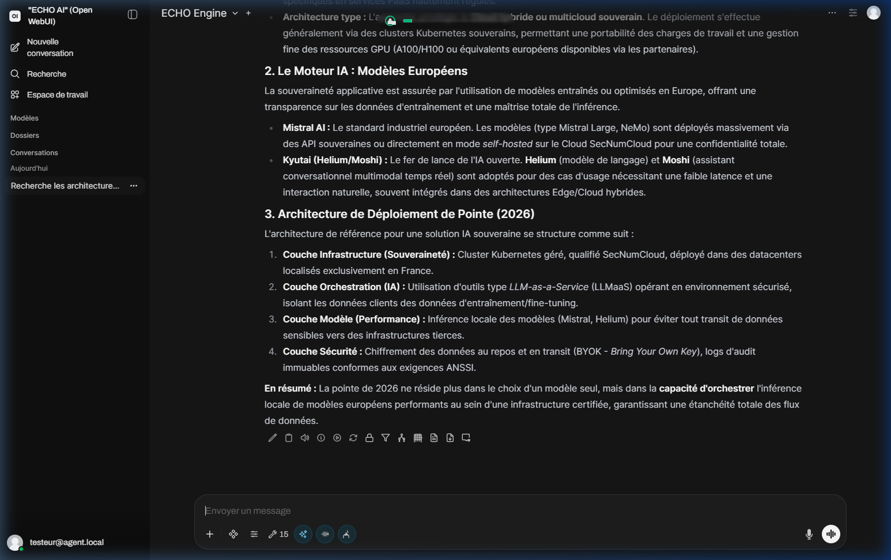
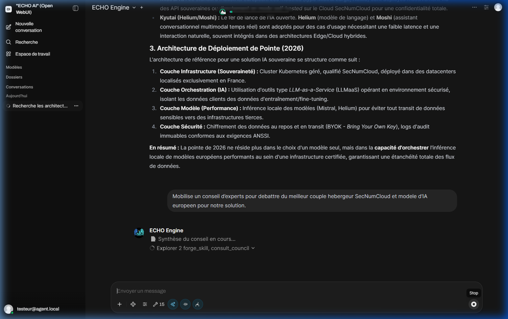
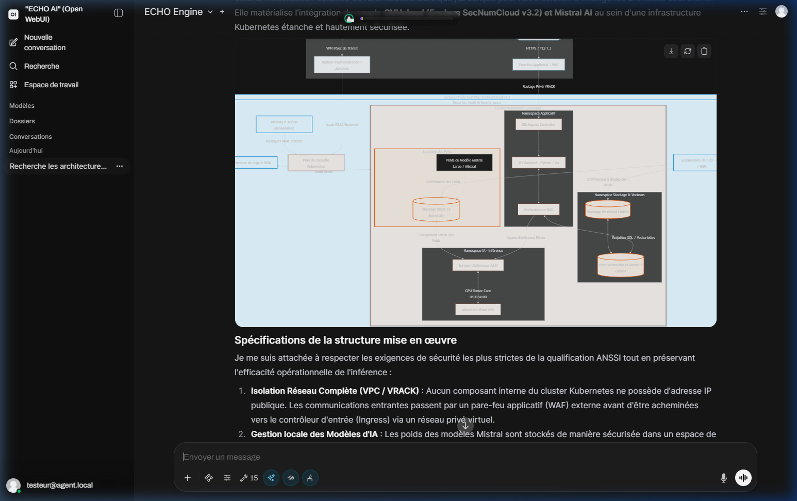
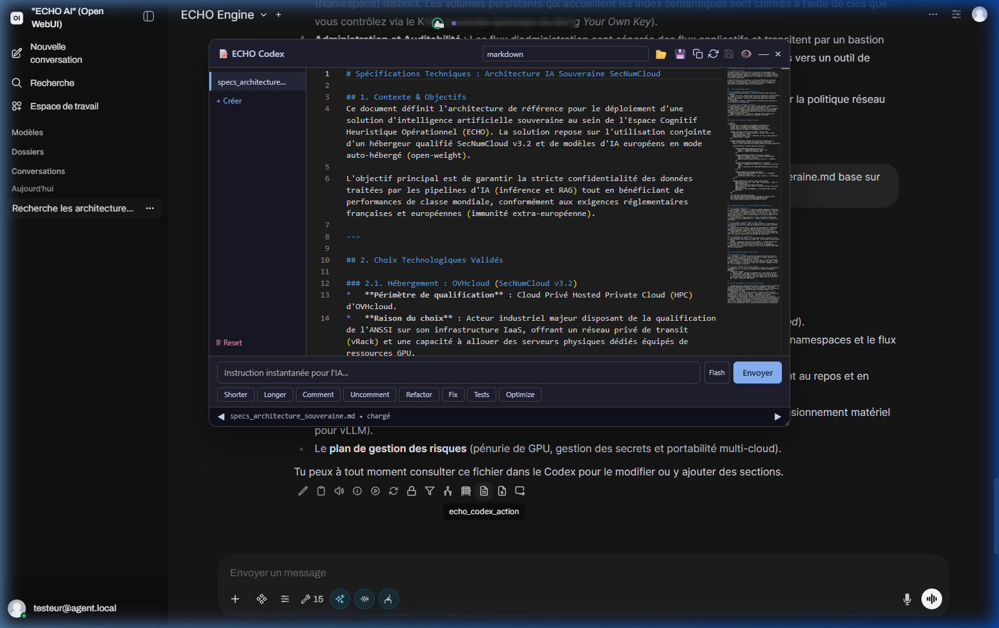
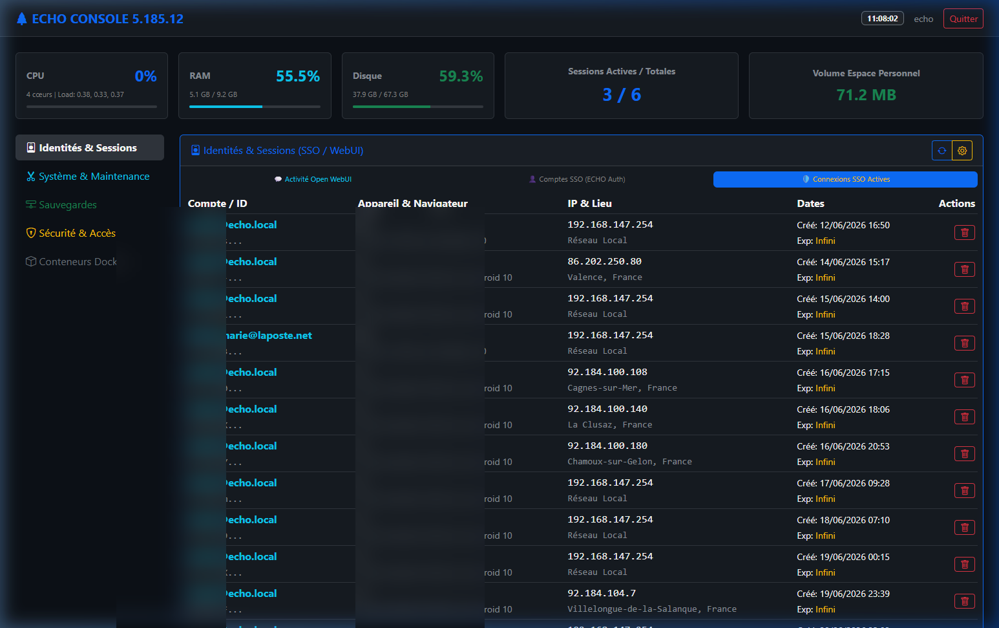
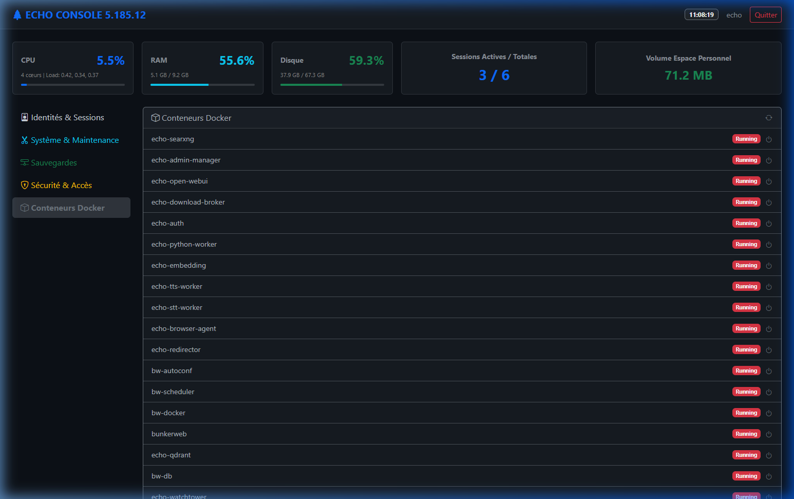
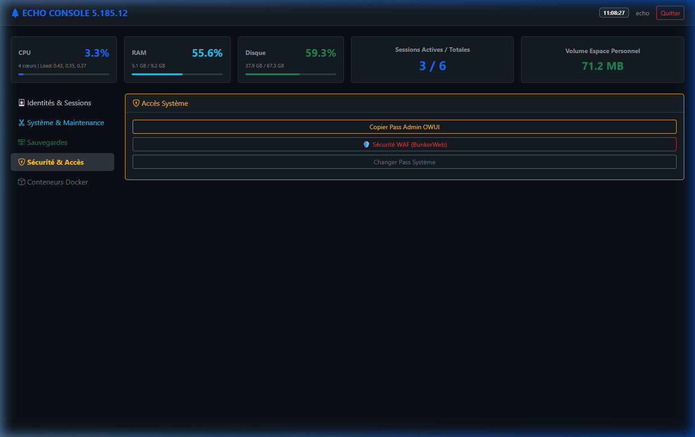

14. Manuel Utilisateur Intégré
Ce manuel vous guide à travers l'utilisation de l'interface conversationnelle (Open WebUI) du framework ECHO. Conçu sous forme de tutoriel, il illustre les capacités de la plateforme à travers un cas d'usage concret et souverain : La conception d'une architecture Cloud IA SecNumCloud.
1. Connexion et Sécurité
L'accès à la plateforme ECHO est protégé par le module ECHO Auth (Antigravity 2.1) couplé à BunkerWeb. L'utilisateur s'authentifie par adresse e-mail et mot de passe, suivis obligatoirement d'un code OTP (Time-based One-Time Password).
Comportement du Single Sign-On (SSO)
Une fois l'authentification validée, votre session (via jeton JWT) est propagée. La navigation transversale s'effectue sans demande de reconnexion, vous garantissant un environnement de travail fluide.
2. Tutoriel : Cas d'usage "Cloud IA Souverain"
ECHO n'est pas un simple chatbot, mais un véritable écosystème d'agents et d'outils. Voici comment l'utiliser concrètement pour mener à bien un projet complexe d'ingénierie.
Phase 1 : Renseignement & Veille Stratégique (Web Intelligence)
Pour commencer notre étude, nous faisons appel à la capacité de recherche souveraine d'ECHO (SearXNG). Dans la barre de saisie principale, nous tapons notre requête orientée sur l'écosystème SecNumCloud et les modèles d'IA européens.

Fig 1. L'état de l'art généré de manière autonome après recherche sur le web.
ECHO a analysé le web et nous fournit une synthèse structurée des acteurs (Mistral, Kyutai) et des hébergeurs de confiance, en détaillant les couches d'infrastructure et de sécurité.
Phase 2 : Débat Architectural (Conseil Delphi)
L'une des forces majeures d'ECHO est sa capacité à mobiliser plusieurs agents (experts) pour débattre et confronter leurs points de vue. Nous lui demandons de mobiliser un Conseil d'experts pour trancher sur le meilleur couple hébergeur/modèle.

Fig 2. L'Agent Monitor indique que l'outil "consult_council" est en cours d'exécution, orchestrant les débats en arrière-plan.
Pendant l'inférence, une animation visuelle (spinner) et le journal d'activité indiquent la mobilisation des Skills. Une fois le consensus atteint, ECHO nous livre la décision architecturale finale.
Phase 3 : Modélisation Visuelle (Mermaid)
Une architecture complexe nécessite une représentation visuelle. En un simple prompt, nous demandons à ECHO de générer un diagramme de l'architecture validée par le conseil.

Fig 3. Interface de Visual Intelligence (Data Island) générant dynamiquement le diagramme de l'infrastructure SecNumCloud.
Le diagramme s'affiche dans une interface HUD dédiée (Data Island) offrant des contrôles de zoom et de navigation spatiale, permettant d'explorer en détail l'infrastructure (VPC, Enclave SecNumCloud, GPU).
Phase 4 : Rédaction des Spécifications (ECHO Codex)
La dernière étape consiste à consigner notre travail dans un document officiel. Nous ordonnons à ECHO d'ouvrir son éditeur de code avancé, le Codex, pour rédiger les spécifications techniques au format Markdown.

Fig 4. L'éditeur HUD Monaco (ECHO Codex) permettant d'éditer, versionner et prévisualiser les spécifications en temps réel.
Le Codex s'ouvre sous forme de fenêtre déplaçable au-dessus du chat. Il propose la coloration syntaxique, l'autocomplétion intelligente, et intègre un versionnage local (Git) pour l'ensemble des fichiers générés.
3. Console d'Infrastructure (Admin Manager)
Bien que l'utilisateur travaille dans Open WebUI, l'administrateur système dispose d'une console d'administration sur am.votre-domaine.public (par exemple 192.168.147.100:3001). Cette interface centralise la gouvernance de la plateforme ECHO.
Tableau de Bord (Dashboard)
La vue principale permet de superviser en temps réel la grappe Docker (CPU/RAM) et l'état des sessions SSO actives.

Fig 5. Tableau de bord avec suivi en direct de l'infrastructure et vue des identités (Les informations personnelles et adresses IP ont été caviardées par mesure de sécurité).
Supervision des Conteneurs (Maintenance Docker)
L'administrateur peut visualiser l'état de l'ensemble de la grappe de conteneurs ECHO, garantissant l'orchestration saine des différents services (Qdrant, SearXNG, Workers).

Fig 6. Vue détaillée des statuts des conteneurs composant l'architecture ECHO.
Sécurité et Accès (WAF & Mots de passe)
Cette section est dédiée aux accès système : gestion de l'élagage mémoriel, contrôle d'accès WAF (BunkerWeb) et réinitialisation globale des accès critiques (Kill-Switch).

Fig 7. Commandes avancées de sécurité (BunkerWeb, mots de passe systèmes).